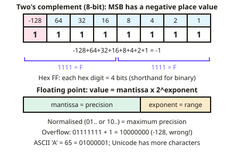

A-level Computer Science Year 12 · Topic 3
Data representation and computer systems
Data representation and computer systems is about how numbers, text, images and sound are stored, and how the processor uses them.
We will use number systems, two's complement, fixed and floating point, and bitwise operations with masks.
Then we look at computer architecture, images and sound, error detection, compression, and encryption and hashing.
- 8 subtopics
- 519 questions
- Free: 3.1 notes and 10 questions
In this topic
- 3.1Number systems and data representationFree below · 67 questions
- 3.2Computer architectureOpen in Full Marks · 62 questions
- 3.3Bitwise manipulation, binary shifts and masksOpen in Full Marks · 65 questions
- 3.4Floating-point normalisation, precision, rounding errors and absolute/relative errorOpen in Full Marks · 65 questions
- 3.5Representing images, sound and MIDIOpen in Full Marks · 69 questions
- 3.6Error detection and correction: parity, majority voting, checksums and check digitsOpen in Full Marks · 60 questions
- 3.7Data compression: lossy, lossless, run-length encoding and dictionary codingOpen in Full Marks · 60 questions
- 3.8Encryption and hashing: Caesar cipher, Vernam cipher, symmetric/asymmetric encryption and hash functionsOpen in Full Marks · 71 questions
3.1 · Free notes
Number systems and data representation

Key points
- Numbers can be represented in binary, denary and hexadecimal; hex is convenient as each digit maps to 4 bits.
- Two's complement represents signed integers: the most significant bit has a negative place value, so 8-bit 11111111 = −1.
- Floating point representation splits a number into a mantissa and an exponent, trading precision against range; normalisation maximises precision.
- Character sets (ASCII, Unicode) map characters to binary codes.
- Errors include overflow (result too large for the bits available) and rounding/truncation errors in floating point arithmetic.
- Sign and magnitude uses the most significant bit as a sign (0 positive, 1 negative) and the remaining bits for the size. 8-bit 10000101 = −5. It has two zeros (+0 and −0) and makes arithmetic awkward, which is why two's complement is preferred.
In more detail
- Worked two's complement: −37 in 8 bits: 37 = 00100101 → invert to 11011010 → add 1 → 11011011.
- Worked hex: A7₁₆ = 10 × 16 + 7 = 167 = 10100111₂.
- Worked fixed point: 0101.1010 with 4 integer and 4 fraction bits = 4 + 1 + 0.5 + 0.125 = 5.625.
- Worked BCD: 59 in binary-coded decimal is 0101 1001, one nibble per digit.
- Worked ranges: 16-bit unsigned is 0 to 65 535; 16-bit two's complement is −32 768 to 32 767.
- Worked prefixes: 1 KiB = 1024 bytes but 1 kB = 1000 bytes, so 1 GiB is about 1.074 GB.
Practice
Number systems and data representation: 10 questions
Pick an answer to check it, or open the answer for the explanation.
1. What does 8-bit two's complement 11111111 represent?
- 255
- −1
- −127
- −128
Show answer
B: −1. −128 + 127 = −1.
2. Why is hexadecimal used by programmers?
- Computers store data in hex
- Each hex digit represents 4 bits, making binary shorter to read
- It is faster to process
- It uses fewer transistors
Show answer
B: Each hex digit represents 4 bits, making binary shorter to read. Hex is a human-friendly shorthand for binary.
3. In floating point representation, what does the exponent control?
- Precision only
- The range, by shifting the binary point
- The sign of the mantissa
- The character set
Show answer
B: The range, by shifting the binary point. A larger exponent field allows a greater range of values.
4. What is normalisation in floating point?
- Removing the exponent
- Adjusting the mantissa and exponent to maximise precision
- Converting to denary
- Rounding to an integer
Show answer
B: Adjusting the mantissa and exponent to maximise precision. It avoids wasting bits on leading zeros.
5. What causes overflow?
- Too few instructions
- A result requiring more bits than are available
- A slow processor
- Using hexadecimal
Show answer
B: A result requiring more bits than are available. The most significant bits are lost, giving a wrong result.
6. What is the denary value of 8-bit two's complement 10000000?
- 128
- −128
- 0
- −1
Show answer
B: −128. The MSB place value is −128.
7. What does increasing the mantissa bits in floating point do?
- Increases range
- Increases precision
- Reduces accuracy
- Removes the exponent
Show answer
B: Increases precision. The exponent controls range instead.
8. What is the result of a binary addition that produces a carry beyond the available bits?
- Rounding
- Overflow
- Underflow
- Normalisation
Show answer
B: Overflow. The stored result becomes incorrect.
9. What is the 8-bit binary value 10110110 written in hexadecimal?
- A6
- 6B
- B3
- B6
Show answer
D: B6. Split into nibbles: 1011 = B and 0110 = 6, giving B6. 6B reverses the order of the nibbles, and A6 mis-converts 1011.
10. What is denary 45 in 8-bit binary?
- 00101101
- 01001101
- 00110101
- 00101011
Show answer
A: 00101101. 45 = 32 + 8 + 4 + 1, which is 00101101. 00110101 is 53, and the other two are different values.
Keep going in Full Marks
Full Marks has 67 questions on Number systems and data representation (57 more than here), set out in practice levels. You also get notes and 3D models for all 8 subtopics of Data representation and computer systems, plus games, timed exams and past papers.
On your exam board
- AQATopic 5: Fundamentals of data representation, Topic 7: Fundamentals of computer organisation and architecture
- OCRTopic 1.1: Processors, input, output and storage devices, Topic 1.3.1: Compression, encryption and hashing, Topic 1.4: Data types, data structures and algorithms
- CambridgeTopic 1: Information representation, Topic 4: Processor fundamentals, Topic 6: Security, privacy and data integrity